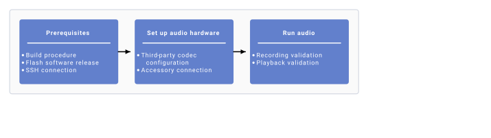
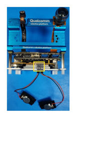
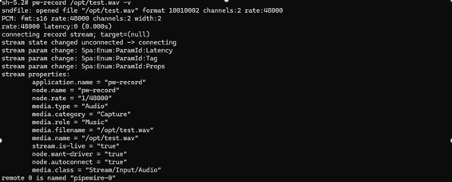
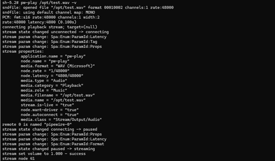

启用音频¶
本章介绍如何配置麦克风与扬声器的硬件连接，并给出验证基础音频用例的步骤。
以下按开发板平台分别说明。整体搭建流程如下图所示。

搭建流程
平台：QCS6490¶
前置条件
- 按照 Qualcomm Linux 构建指南 搭建好基础环境。
- 将最新的软件版本刷写到开发板。
-
建立 SSH 连接：
-
以 Permissive 模式启用 SSH。具体步骤见 Use SSH。
-
运行以下命令连接设备。例如设备 IP 为 10.92.160.222 时，运行下面第二条命令：
搭建音频硬件
- 要在开发板上激活数字麦克风接口（Digital Microphone Interface，DMIC），使用 DIP 开关 2，把 PIN 2 拨到 ON 位置。
 2. 按下图所示将扬声器连接到开发板。
2. 按下图所示将扬声器连接到开发板。

平台：IQ-9075¶
前置条件
- 按照 Qualcomm Linux 构建指南 搭建好基础环境。
- 将最新的软件版本刷写到开发板。
-
建立 SSH 连接：
-
以 Permissive 模式启用 SSH。具体步骤见 Use SSH。
-
运行以下命令连接设备。例如设备 IP 为 10.92.160.222 时，运行下面第二条命令：
搭建音频硬件
按下图所示将扬声器连接到开发板。

注意
EVT 版本的开发板需要进行硬件改板（rework），音频功能才能正常工作。
平台：IQ-8275¶
前置条件
- 按照 Qualcomm Linux 构建指南 搭建好基础环境。
- 将最新的软件版本刷写到开发板。
-
建立 SSH 连接：
-
以 Permissive 模式启用 SSH。具体步骤见 Use SSH。
-
运行以下命令连接设备。例如设备 IP 为 10.92.160.222 时，运行下面第二条命令：
搭建音频硬件
按下图所示将扬声器连接到开发板。

使用 GStreamer 启用音频¶
要使用 GStreamer 应用解码音频，请参考：
要使用 GStreamer 应用编码音频，请按以下步骤操作：
- 设置 PipeWire 的默认输入设备。用
wpctl status命令列出可用节点，再运行wpctl set-default把源（source）节点设为手柄麦克风（handset mic）。
注意
要查看不同芯片组对应的 GStreamer 应用，参见 多媒体示例应用的源码信息。
GStreamer 是一个开源多媒体框架。Qualcomm 以 Qualcomm IM SDK 的形式提供了一系列 GStreamer 插件。
GStreamer 插件¶
- 音频解码器和编码器的 GStreamer 插件包含在 Qualcomm IM SDK 中。下载完整的 Qualcomm IM SDK 即可使用 pulsesrc 和 pulsesink。
- Qualcomm IM SDK 快速入门指南 介绍了如何下载并构建 Qualcomm IM SDK。
GStreamer 示例应用¶
面向音频用例的 GStreamer 示例应用 同样包含在 Qualcomm IM SDK 中。运行示例应用前，需满足这些前置条件。
可以用命令行或 GST 应用来运行音频用例。
用 GStreamer 应用播放和录制音频¶
参考 音频播放/采集 中给出的 GST 参考命令。
使用 PipeWire 启用音频¶
PipeWire 是一个基于图（graph）的处理框架，用于处理多媒体数据。PipeWire 的源码位于 build-qcom-wayland/workspace/sources/pipewire。
更多信息以及可用 API 的详细说明，参见 PipeWire 开源文档。
注意
PipeWire 仅支持对 .wav 文件进行播放和录制。
PipeWire 录制¶
适用平台：QCS6490 / IQ-9075 / IQ-8275
- 搭建 PipeWire 录制：用
wpctl status命令列出可用节点，再运行wpctl set-default把源节点设为手柄麦克风。命令行输出应类似下图：

2. 按 Ctrl + C 停止录制。支持的格式有 s16le、s24le、s32le、s24-32le；采样率（rate）可取 8000、16000、22050、24000、32000、44100、48000、88200、96000、176400、192000、352800、384000、705600、768000；声道数（channels）可取 1 到最多 8。录制音量设置¶
适用平台：QCS6490 / IQ-9075 / IQ-8275
- 用
pw-record工具开始音频采集。 - 并行打开一个新的命令行窗口，通过
ssh root@ip-addr进入设备，运行以下命令设置音量级别。命令中的 0.8 表示 80% 音量，可按需要调整该值：
PipeWire 播放¶
适用平台：QCS6490 / IQ-9075 / IQ-8275
- 把待播放的 .wav 音频文件推送到设备：
ssh root@ip-addr 进入设备 shell。
3. 用下面的命令设置默认的 sink 模式，在两种 sink 模式中二选一：一种是低延迟（Low Latency，LL），另一种是深缓冲（Deep Buffer，DB）。
4. 用以下命令开始播放。命令行输出应类似下图：

播放音量设置¶
适用平台：QCS6490 / IQ-9075 / IQ-8275
- 用
pw-play工具在扬声器上开始音频播放。 - 并行打开一个新的命令行窗口，通过
ssh root@ip-addr进入设备，运行以下命令设置音量级别。命令中的 0.8 表示 80% 音量，可按需要调整该值：